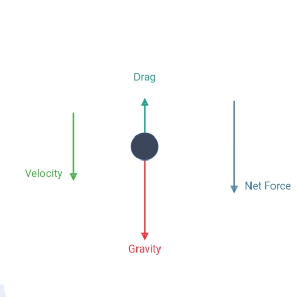
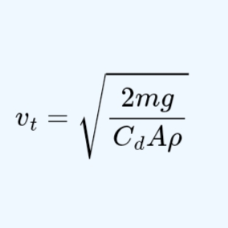

Reality

Idealization Discretisation
Discretisation
 Geometry
Geometry

AlgebraThe spacing between the dotted lines represents Δt, while the height represents the corresponding velocity $$v_{n+1} = v_n + \Delta t \cdot g \left(1 - \frac{v_n^2}{v_t^2}\right)$$ . As Δt → 0 (i.e., Δt → dt), the graph approaches a smooth continuous curve.